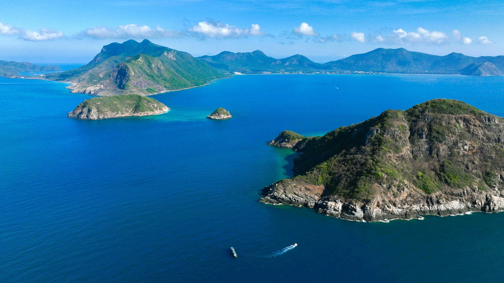
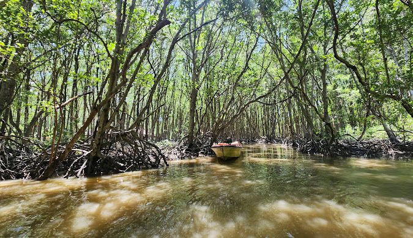
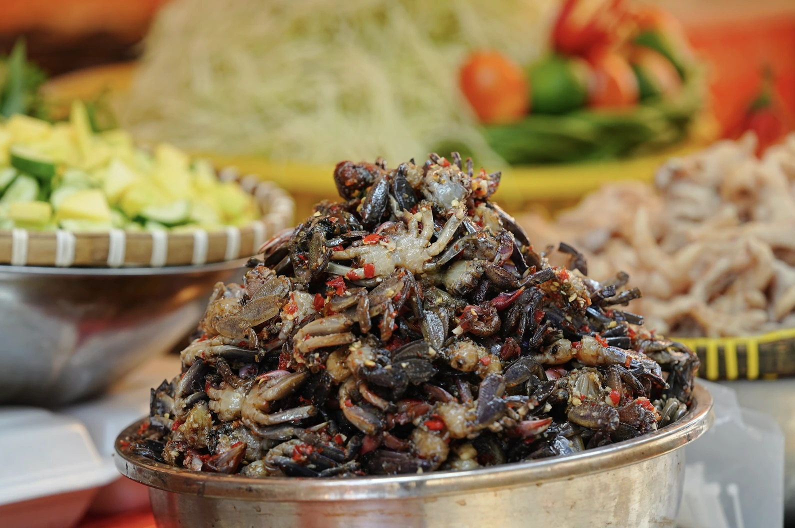
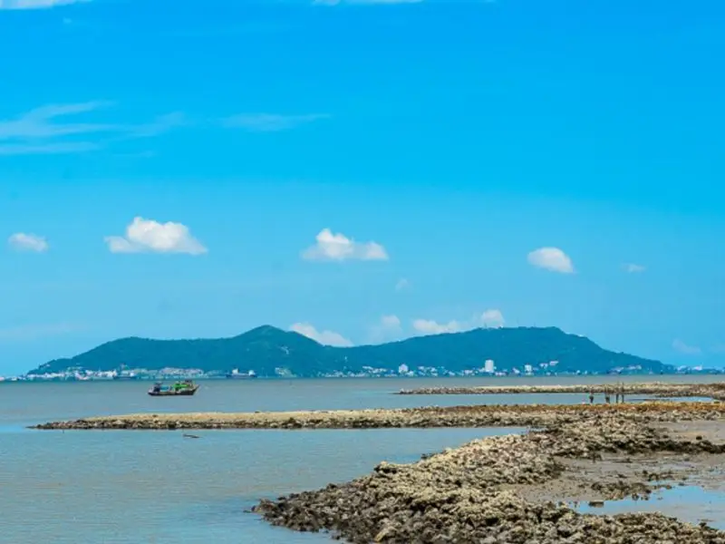
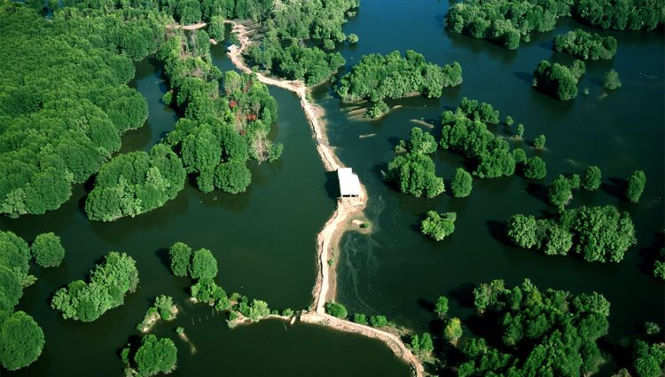
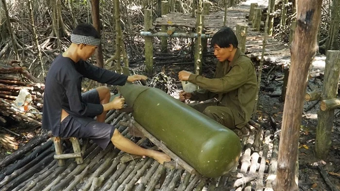

Du khách nên ghé Vườn Quốc gia Cần Giờ để tham quan rừng ngập mặn, quan sát các loài động thực vật đặc trưng và trải nghiệm không gian thiên nhiên yên bình.
Các bãi biển như Thạnh An, Lý Nhơn thích hợp để tắm biển, câu cá và dạo chơi thư giãn.
Khu di tích Rừng Sác – nơi ghi dấu lịch sử kháng chiến chống Mỹ, là điểm tham quan ý nghĩa cho du khách yêu thích lịch sử.
Bạn có thể trải nghiệm đời sống của ngư dân địa phương, thưởng thức hải sản tươi sống và tham gia các hoạt động truyền thống như gỡ lưới, câu mực.
Cần Giờ gắn liền với lịch sử kháng chiến chống Mỹ, đặc biệt là khu Rừng Sác với nhiều di tích lịch sử quan trọng.
Văn hóa địa phương thể hiện qua đời sống gắn bó với biển và rừng ngập mặn, nghề đánh bắt hải sản và lễ hội dân gian.
Các lễ hội truyền thống như lễ cúng cá và các phong tục địa phương vẫn được gìn giữ lâu đời.
Sự kết hợp giữa lịch sử, văn hóa và thiên nhiên tạo nên bản sắc riêng cho vùng đất này.
Cần Giờ nổi bật với rừng ngập mặn rộng lớn, bãi biển hoang sơ và hệ sinh thái đa dạng.
Các loài động vật như khỉ, chim, cá sấu và rùa biển có thể quan sát tại vườn quốc gia hoặc các khu bảo tồn.
Dòng sông và kênh rạch uốn lượn giữa rừng ngập mặn tạo nên cảnh quan độc đáo, lý tưởng cho các tour du thuyền hoặc chèo thuyền kayak.
Bình minh và hoàng hôn trên biển hay rừng ngập mặn mang đến khung cảnh yên bình và thư giãn tuyệt vời.
Cần Giờ có khí hậu nhiệt đới gió mùa, mùa khô từ tháng 12 đến tháng 4 là thời điểm lý tưởng để du lịch.
Người dân thân thiện, hiền hòa và sống gắn bó với nghề biển, luôn sẵn sàng giúp đỡ du khách.
Sự kết hợp giữa thiên nhiên hoang sơ và con người thân thiện tạo nên trải nghiệm du lịch gần gũi, đáng nhớ.





